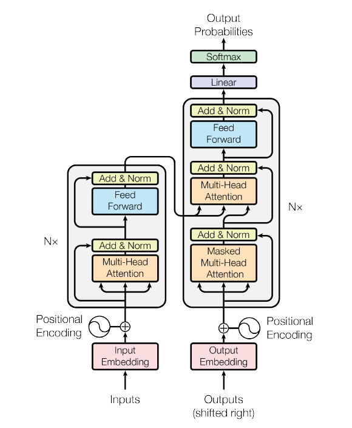
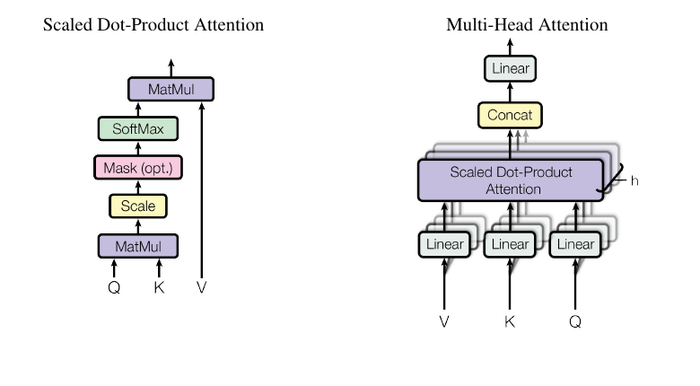
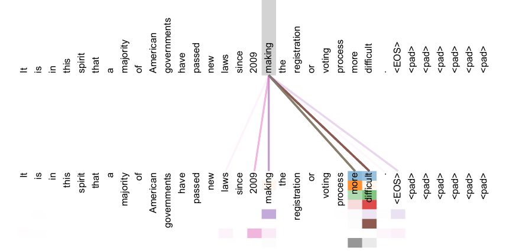
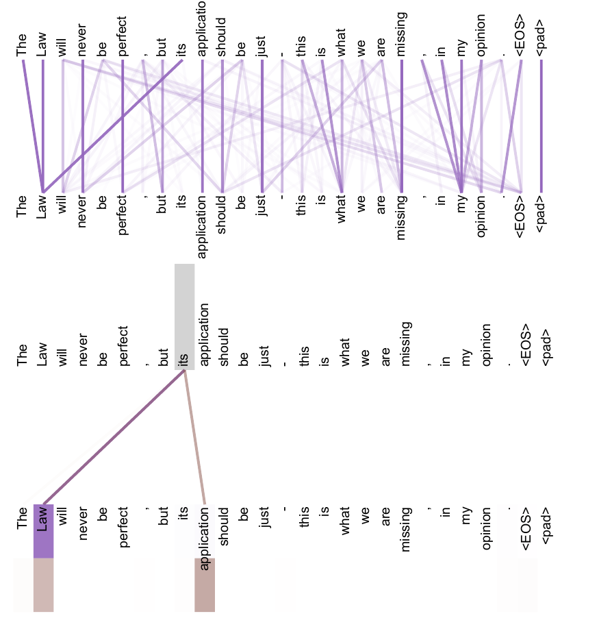
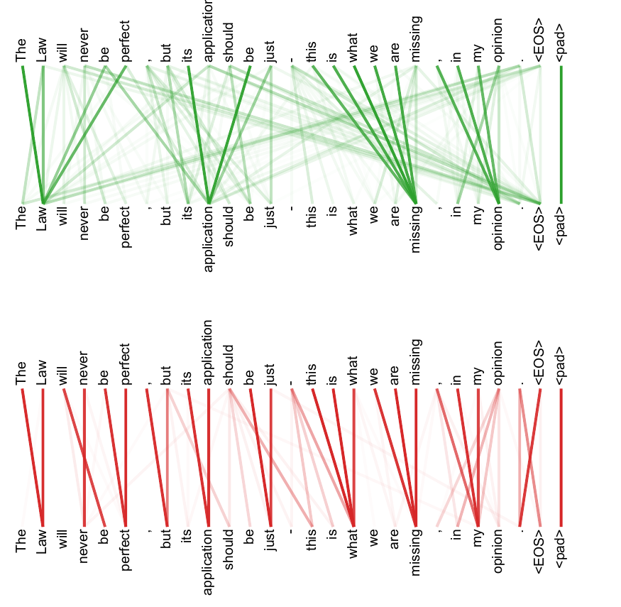

Attention Is All You Need
注意力就是你所需要的一切
摘要
主流的序列转导模型基于复杂的循环神经网络或卷积神经网络，并包含编码器和解码器。表现最佳的模型还通过注意力机制连接编码器与解码器。我们提出一种新的、简单的网络架构 Transformer，该架构完全基于注意力机制，彻底舍弃循环结构和卷积结构。在两个机器翻译任务上的实验表明，这类模型在质量上更优，同时更易并行化，并且训练所需时间显著更少。我们的模型在 WMT 2014 英译德翻译任务上达到 28.4 BLEU，相比包括集成模型在内的既有最佳结果提升超过 2 BLEU。在 WMT 2014 英译法翻译任务上，我们的模型在 8 块 GPU 上训练 3.5 天后，取得 41.8 的单模型最新最佳 BLEU 分数，其训练成本仅为文献中最佳模型的一小部分。我们还将 Transformer 成功应用于英语成分句法分析，并在大规模训练数据和有限训练数据条件下均取得良好效果，由此表明 Transformer 能够很好地泛化到其他任务。
作者贡献说明：作者贡献相等，列名顺序为随机。Jakob 提出用自注意力替代 RNN，并启动了评估这一想法的工作。Ashish 与 Illia 设计并实现了首批 Transformer 模型，并深度参与了本工作的各个方面。Noam 提出了缩放点积注意力、多头注意力以及无参数位置表示，并成为另一位几乎参与所有细节的人。Niki 在最初代码库和 tensor2tensor 中设计、实现、调优并评估了大量模型变体。Llion 也实验了新的模型变体，负责最初代码库、高效推理和可视化。Lukasz 与 Aidan 花费了大量时间设计并实现 tensor2tensor 的多个部分，用其替代早期代码库，显著提升了结果并大幅加速了研究。
1 引言
循环神经网络，尤其是长短期记忆网络（LSTM）[13] 和门控循环神经网络 [7]，已经牢固确立为语言建模、机器翻译等序列建模与序列转导问题中的最新最佳方法 [35, 2, 5]。此后，大量工作持续推动循环语言模型和编码器-解码器架构的边界 [38, 24, 15]。
循环模型通常沿输入和输出序列中的符号位置对计算进行因式分解。它们将位置与计算时间步对齐，并生成一系列隐藏状态 h_t，其中每个隐藏状态是前一隐藏状态 h_{t-1} 与位置 t 处输入的函数。这种内在的序列性质阻碍了训练样本内部的并行化；当序列长度变长时，这一点尤为关键，因为内存约束限制了跨样本的批处理规模。近期工作通过因式分解技巧 [21] 和条件计算 [32] 在计算效率上取得了显著改进，后者还同时提升了模型性能。然而，序列计算这一根本约束依然存在。
注意力机制已成为多种任务中强大序列建模与转导模型的组成部分，使模型能够对依赖关系建模，而不考虑它们在输入或输出序列中的距离 [2, 19]。然而，除少数情况 [27] 外，这类注意力机制都与循环网络结合使用。
在本文中，我们提出 Transformer：一种摒弃循环结构、完全依赖注意力机制来建立输入与输出之间全局依赖关系的模型架构。Transformer 支持显著更高程度的并行化，并且只需在 8 块 P100 GPU 上训练短至 12 小时，就能在翻译质量上达到新的最新最佳水平。
2 背景
减少序列计算这一目标同样构成了 Extended Neural GPU [16]、ByteNet [18] 和 ConvS2S [9] 的基础。这些模型都使用卷积神经网络作为基本构件，并为所有输入和输出位置并行计算隐藏表示。在这些模型中，将两个任意输入或输出位置的信号关联起来所需的操作数会随位置距离增长：对 ConvS2S 是线性增长，对 ByteNet 是对数增长。这使学习远距离位置之间的依赖更加困难 [12]。在 Transformer 中，这一点被降低为常数数量的操作，尽管其代价是由于对注意力加权位置求平均而降低有效分辨率。我们用第 3.2 节所述的多头注意力来抵消这一影响。
自注意力（self-attention，有时称为 intra-attention）是一种注意力机制，它关联单个序列中的不同位置，以计算该序列的表示。自注意力已成功用于多种任务，包括阅读理解、抽象式摘要、文本蕴含以及学习任务无关的句子表示 [4, 27, 28, 22]。
端到端记忆网络基于循环注意力机制，而非与序列位置对齐的循环结构；已有研究表明，它们在简单语言问答和语言建模任务上表现良好 [34]。
然而，据我们所知，Transformer 是第一个完全依赖自注意力来计算输入和输出表示的转导模型，它没有使用与序列位置对齐的 RNN 或卷积。在以下各节中，我们将描述 Transformer，说明使用自注意力的动机，并讨论它相对于 [17, 18] 和 [9] 等模型的优势。
3 模型架构
大多数具有竞争力的神经序列转导模型都采用编码器-解码器结构 [5, 2, 35]。在这种结构中，编码器将符号表示的输入序列 (x_1, ..., x_n) 映射为连续表示序列 z = (z_1, ..., z_n)。给定 z 后，解码器随后一次生成一个元素，形成符号输出序列 (y_1, ..., y_m)。在每一步中，模型都是自回归的 [10]，即在生成下一个符号时，会把此前已经生成的符号作为额外输入。
Transformer 遵循这一总体架构，在编码器和解码器中均使用堆叠的自注意力层和逐位置的全连接层。图 1 的左半部分和右半部分分别展示了编码器和解码器。

3.1 编码器与解码器堆栈
编码器：编码器由 N = 6 个相同层堆叠而成。每一层包含两个子层。第一个子层是多头自注意力机制，第二个子层是一个简单的、逐位置的全连接前馈网络。我们在两个子层的每一个周围使用残差连接 [11]，随后进行层归一化 [1]。也就是说，每个子层的输出为 LayerNorm(x + Sublayer(x))，其中 Sublayer(x) 是该子层本身实现的函数。为便于使用这些残差连接，模型中的所有子层以及嵌入层都产生维度为 d_model = 512 的输出。
解码器：解码器同样由 N = 6 个相同层堆叠而成。除每个编码器层中的两个子层外，解码器还插入第三个子层，该子层对编码器堆栈的输出执行多头注意力。与编码器类似，我们在每个子层周围使用残差连接，随后进行层归一化。我们还修改了解码器堆栈中的自注意力子层，以防止位置关注其后的后续位置。该掩蔽机制与输出嵌入整体右移一个位置相结合，确保位置 i 的预测只能依赖于位置小于 i 的已知输出。
3.2 注意力
注意力函数可被描述为：将一个查询和一组键-值对映射到一个输出，其中查询、键、值和输出均为向量。输出被计算为值的加权和，其中分配给每个值的权重由查询与相应键之间的兼容性函数计算得到。

3.2.1 缩放点积注意力
我们将所使用的特定注意力称为“缩放点积注意力”（Scaled Dot-Product Attention，见图 2）。输入由维度为 d_k 的查询和键，以及维度为 d_v 的值组成。我们计算查询与所有键的点积，将每个点积除以 sqrt(d_k)，再应用 softmax 函数以得到作用于各个值的权重。
实践中，我们会同时在一组查询上计算注意力函数，并将它们打包为矩阵 Q。键和值也分别打包为矩阵 K 和 V。输出矩阵计算如下：
Attention(Q, K, V) = softmax(QK^T / sqrt(d_k)) V (1)最常用的两种注意力函数是加性注意力 [2] 和点积（乘性）注意力。除缩放因子 1 / sqrt(d_k) 外，点积注意力与我们的算法相同。加性注意力则使用具有单个隐藏层的前馈网络来计算兼容性函数。虽然二者在理论复杂度上相近，但点积注意力在实践中更快且空间效率更高，因为它可以用高度优化的矩阵乘法代码实现。
当 d_k 较小时，两种机制的表现相近；但对于较大的 d_k，未缩放的点积注意力不如加性注意力 [3]。我们推测，当 d_k 较大时，点积的幅值会变大，把 softmax 函数推入梯度极小的区域。为抵消这一影响，我们用 1 / sqrt(d_k) 对点积进行缩放。
脚注：为说明点积为何会变大，假设 q 和 k 的分量是均值为 0、方差为 1 的独立随机变量。则它们的点积 q · k = sum_{i=1}^{d_k} q_i k_i 的均值为 0，方差为 d_k。
3.2.2 多头注意力
与其使用一次具有 d_model 维键、值和查询的注意力函数，我们发现更有益的做法是：分别用不同的、学习得到的线性投影，将查询、键和值线性投影 h 次，分别投影到 d_k、d_k 和 d_v 维。在这些投影后的查询、键和值上，我们并行执行注意力函数，得到 d_v 维的输出值。随后将这些输出拼接起来，并再次投影，得到最终值，如图 2 所示。
多头注意力使模型能够在不同位置共同关注来自不同表示子空间的信息。若只有一个注意力头，求平均会抑制这种能力。
MultiHead(Q, K, V) = Concat(head_1, ..., head_h) W^O
where head_i = Attention(QW_i^Q, KW_i^K, VW_i^V)其中投影参数矩阵为 W_i^Q in R^{d_model x d_k}、W_i^K in R^{d_model x d_k}、W_i^V in R^{d_model x d_v}，以及 W^O in R^{h d_v x d_model}。
在本文中，我们使用 h = 8 个并行注意力层，即 8 个头。对每个头，我们设 d_k = d_v = d_model / h = 64。由于每个头的维度降低，总计算成本与使用完整维度的单头注意力相近。
3.2.3 我们模型中注意力的应用
Transformer 以三种不同方式使用多头注意力：
- 在“编码器-解码器注意力”层中，查询来自前一个解码器层，而记忆键和值来自编码器的输出。这使解码器中的每个位置都能关注输入序列中的所有位置。这模仿了 [38, 2, 9] 等序列到序列模型中典型的编码器-解码器注意力机制。
- 编码器包含自注意力层。在自注意力层中，所有键、值和查询都来自同一位置来源；在这里，它们来自编码器中前一层的输出。编码器中的每个位置都能关注编码器前一层中的所有位置。
- 类似地，解码器中的自注意力层允许解码器中的每个位置关注该位置及其之前的所有位置。为保持自回归性质，我们需要阻止解码器中的左向信息流。我们在缩放点积注意力内部通过掩蔽所有对应非法连接的 softmax 输入值（将其设为
-infinity）来实现这一点。参见图 2。
3.3 逐位置前馈网络
除注意力子层外，我们的编码器和解码器中的每一层都包含一个全连接前馈网络。该网络分别且以相同方式应用于每个位置。它由两个线性变换组成，中间带有 ReLU 激活：
FFN(x) = max(0, xW_1 + b_1) W_2 + b_2 (2)虽然这些线性变换在不同位置上相同，但它们在不同层之间使用不同参数。另一种描述方式是：这是两个卷积核大小为 1 的卷积。输入和输出的维度均为 d_model = 512，内部层维度为 d_ff = 2048。
3.4 嵌入与 Softmax
与其他序列转导模型类似，我们使用学习得到的嵌入将输入 token 和输出 token 转换为维度为 d_model 的向量。我们还使用常规的学习线性变换和 softmax 函数，将解码器输出转换为预测下一个 token 的概率。在我们的模型中，与 [30] 类似，我们在两个嵌入层和 softmax 前的线性变换之间共享同一个权重矩阵。在嵌入层中，我们将这些权重乘以 sqrt(d_model)。
3.5 位置编码
由于我们的模型既不包含循环结构也不包含卷积结构，为了让模型能够利用序列顺序，我们必须向模型注入有关序列中 token 的相对位置或绝对位置的信息。为此，我们在编码器和解码器堆栈底部，将“位置编码”（positional encodings）加入输入嵌入。位置编码与嵌入具有相同维度 d_model，因此二者可以相加。位置编码有许多选择，包括学习得到的和固定的 [9]。
在本文中，我们使用不同频率的正弦和余弦函数：
PE(pos, 2i) = sin(pos / 10000^{2i / d_model})
PE(pos, 2i+1) = cos(pos / 10000^{2i / d_model})其中 pos 表示位置，i 表示维度。也就是说，位置编码的每个维度都对应一个正弦曲线。波长构成从 2pi 到 10000 * 2pi 的几何级数。我们选择这一函数，是因为我们假设它可以使模型轻松学习按相对位置进行关注：对于任何固定偏移 k，PE_{pos+k} 都可以表示为 PE_pos 的线性函数。
我们也实验了使用学习得到的位置嵌入 [9]，并发现两种版本产生的结果几乎相同（见表 3 第 E 行）。我们选择正弦版本，是因为它可能使模型外推到比训练过程中遇到的序列更长的序列长度。
表 1：不同层类型的最大路径长度、每层复杂度和最少序列操作数。n 为序列长度，d 为表示维度，k 为卷积核大小，r 为受限自注意力中的邻域大小。
| 层类型 | 每层复杂度 | 序列操作数 | 最大路径长度 |
|---|---|---|---|
| 自注意力 | O(n^2 * d) | O(1) | O(1) |
| 循环层 | O(n * d^2) | O(n) | O(n) |
| 卷积层 | O(k * n * d^2) | O(1) | O(log_k(n)) |
| 自注意力（受限） | O(r * n * d) | O(1) | O(n / r) |
4 为什么使用自注意力
在本节中，我们比较自注意力层与循环层、卷积层的若干方面。后两者常用于将一个变长符号表示序列 (x_1, ..., x_n) 映射为另一个等长序列 (z_1, ..., z_n)，其中 x_i, z_i in R^d，例如典型序列转导编码器或解码器中的隐藏层。为说明我们使用自注意力的动机，我们考虑三个期望性质。
其一是每层的总计算复杂度。其二是可以并行化的计算量，可由所需最少序列操作数来衡量。
其三是网络中远距离依赖之间的路径长度。学习远距离依赖是许多序列转导任务中的关键挑战。影响学习此类依赖能力的一个关键因素，是前向信号和反向信号在网络中必须经过的路径长度。输入和输出序列中任意位置组合之间的路径越短，学习远距离依赖越容易 [12]。因此，我们也比较由不同层类型构成的网络中任意两个输入和输出位置之间的最大路径长度。
如表 1 所示，自注意力层以常数数量的顺序执行操作连接所有位置，而循环层需要 O(n) 个顺序操作。就计算复杂度而言，当序列长度 n 小于表示维度 d 时，自注意力层快于循环层；在机器翻译中，最新最佳模型使用的句子表示（如 word-piece [38] 和 byte-pair [31] 表示）通常满足这一条件。为了提高涉及超长序列任务的计算性能，可以将自注意力限制为只考虑输入序列中以相应输出位置为中心、大小为 r 的邻域。这会把最大路径长度增加到 O(n / r)。我们计划在未来工作中进一步研究这一方法。
单个卷积层在卷积核宽度 k < n 时并不能连接所有输入和输出位置对。若要做到这一点，在连续卷积核情形下需要堆叠 O(n / k) 个卷积层；在扩张卷积 [18] 情形下则需要 O(log_k(n)) 个卷积层，这会增加网络中任意两个位置之间最长路径的长度。卷积层通常比循环层更昂贵，代价相差一个 k 因子。然而，可分离卷积 [6] 将复杂度显著降低到 O(k * n * d + n * d^2)。即使 k = n，可分离卷积的复杂度也等于一个自注意力层加一个逐位置前馈层的组合，而这正是我们模型所采用的方法。
作为附带收益，自注意力可能产生更具可解释性的模型。我们检查了模型中的注意力分布，并在附录中展示和讨论了若干示例。不仅单个注意力头会明确学习执行不同任务，许多注意力头还表现出与句子的句法和语义结构相关的行为。
5 训练
本节描述我们模型的训练方案。
5.1 训练数据与批处理
我们在标准 WMT 2014 英德数据集上进行训练，该数据集包含约 450 万个句子对。句子使用 byte-pair encoding [3] 编码，源语言和目标语言共享约 37,000 个 token 的词表。对于英法任务，我们使用规模大得多的 WMT 2014 英法数据集，该数据集包含 3600 万个句子，并将 token 切分到 32,000 个 word-piece 词表中 [38]。句子对按照近似序列长度进行批处理。每个训练批次包含一组句子对，其中约有 25,000 个源 token 和 25,000 个目标 token。
5.2 硬件与训练日程
我们在一台配有 8 块 NVIDIA P100 GPU 的机器上训练模型。对于使用本文所述超参数的基础模型，每个训练步骤大约耗时 0.4 秒。我们将基础模型总共训练 100,000 步，即 12 小时。对于大模型（见表 3 最后一行），每步耗时 1.0 秒。大模型训练 300,000 步（3.5 天）。
5.3 优化器
我们使用 Adam 优化器 [20]，其中 beta_1 = 0.9、beta_2 = 0.98、epsilon = 10^-9。训练过程中，学习率按以下公式变化：
lrate = d_model^{-0.5} * min(step_num^{-0.5}, step_num * warmup_steps^{-1.5}) (3)这对应于：在前 warmup_steps 个训练步骤中线性增加学习率，此后按步数平方根倒数成比例降低学习率。我们使用 warmup_steps = 4000。
5.4 正则化
训练过程中，我们采用三种正则化方法：
残差 Dropout：我们将 dropout [33] 应用于每个子层的输出，然后再将其加入子层输入并进行归一化。此外，我们还在编码器和解码器堆栈中，将 dropout 应用于嵌入与位置编码之和。对于基础模型，我们使用 P_drop = 0.1。
标签平滑：训练过程中，我们使用值为 epsilon_ls = 0.1 的标签平滑 [36]。这会损害困惑度，因为模型会学习得更不确定，但能提高准确率和 BLEU 分数。
表 2：在英语到德语和英语到法语的 newstest2014 测试上，Transformer 以一小部分训练成本取得了优于此前最新最佳模型的 BLEU 分数。
| 模型 | EN-DE BLEU | EN-FR BLEU | EN-DE 训练成本（FLOPs） | EN-FR 训练成本（FLOPs） |
|---|---|---|---|---|
| ByteNet [18] | 23.75 | |||
| Deep-Att + PosUnk [39] | 39.2 | 1.0 * 10^20 | ||
| GNMT + RL [38] | 24.6 | 39.92 | 2.3 * 10^19 | 1.4 * 10^20 |
| ConvS2S [9] | 25.16 | 40.46 | 9.6 * 10^18 | 1.5 * 10^20 |
| MoE [32] | 26.03 | 40.56 | 2.0 * 10^19 | 1.2 * 10^20 |
| Deep-Att + PosUnk Ensemble [39] | 40.4 | 8.0 * 10^20 | ||
| GNMT + RL Ensemble [38] | 26.30 | 41.16 | 1.8 * 10^20 | 1.1 * 10^21 |
| ConvS2S Ensemble [9] | 26.36 | 41.29 | 7.7 * 10^19 | 1.2 * 10^21 |
| Transformer（基础模型） | 27.3 | 38.1 | 3.3 * 10^18 | |
| Transformer（大模型） | 28.4 | 41.8 | 2.3 * 10^19 |
6 结果
6.1 机器翻译
在 WMT 2014 英译德翻译任务上，大 Transformer 模型（表 2 中的 Transformer (big)）比此前报告的最佳模型（包括集成模型）高出超过 2.0 BLEU，取得了 28.4 的新最新最佳 BLEU 分数。该模型的配置列在表 3 的最后一行。在 8 块 P100 GPU 上训练耗时 3.5 天。即便是我们的基础模型，也以任何有竞争力模型的一小部分训练成本，超过了此前所有已发表模型和集成模型。
在 WMT 2014 英译法翻译任务上，我们的大模型取得 41.0 的 BLEU 分数，超过此前所有已发表的单模型，同时训练成本不到此前最新最佳模型的四分之一。用于英译法的 Transformer（大模型）采用 P_drop = 0.1 的 dropout 率，而不是 0.3。
对于基础模型，我们使用通过平均最后 5 个检查点得到的单一模型，这些检查点以 10 分钟间隔写入。对于大模型，我们平均最后 20 个检查点。我们使用 beam size 为 4、长度惩罚 alpha = 0.6 的束搜索 [38]。这些超参数是在开发集上实验后选择的。推理时，我们将最大输出长度设为输入长度 + 50，但在可能时提前终止 [38]。
表 2 总结了我们的结果，并将我们的翻译质量和训练成本与文献中的其他模型架构进行了比较。我们通过训练时间、所用 GPU 数量以及每块 GPU 持续单精度浮点能力的估计值相乘，来估计训练一个模型所使用的浮点运算数量。
脚注：我们分别为 K80、K40、M40 和 P100 使用了 2.8、3.7、6.0 和 9.5 TFLOPS 的数值。
6.2 模型变体
为评估 Transformer 不同组件的重要性，我们以不同方式改变基础模型，并在英语到德语翻译的开发集 newstest2013 上测量性能变化。我们使用上一节所述的束搜索，但不进行检查点平均。结果见表 3。
表 3：Transformer 架构的变体。未列出的值与基础模型相同。所有指标均在英语到德语翻译开发集 newstest2013 上报告。所列困惑度按照我们的 byte-pair encoding 以每个 wordpiece 计，不应与按每词计的困惑度比较。
| 变体 | N | d_model | d_ff | h | d_k | d_v | P_drop | epsilon_ls | 训练步数 | PPL(dev) | BLEU(dev) | 参数量 x10^6 |
|---|---|---|---|---|---|---|---|---|---|---|---|---|
| base | 6 | 512 | 2048 | 8 | 64 | 64 | 0.1 | 0.1 | 100K | 4.92 | 25.8 | 65 |
| A | 1 | 512 | 512 | 5.29 | 24.9 | |||||||
| A | 4 | 128 | 128 | 5.00 | 25.5 | |||||||
| A | 16 | 32 | 32 | 4.91 | 25.8 | |||||||
| A | 32 | 16 | 16 | 5.01 | 25.4 | |||||||
| B | 16 | 5.16 | 25.1 | 58 | ||||||||
| B | 32 | 5.01 | 25.4 | 60 | ||||||||
| C | 2 | 6.11 | 23.7 | 36 | ||||||||
| C | 4 | 5.19 | 25.3 | 50 | ||||||||
| C | 8 | 4.88 | 25.5 | 80 | ||||||||
| C | 256 | 32 | 32 | 5.75 | 24.5 | 28 | ||||||
| C | 1024 | 128 | 128 | 4.66 | 26.0 | 168 | ||||||
| C | 1024 | 5.12 | 25.4 | 53 | ||||||||
| C | 4096 | 4.75 | 26.2 | 90 | ||||||||
| D | 0.0 | 5.77 | 24.6 | |||||||||
| D | 0.2 | 4.95 | 25.5 | |||||||||
| D | 0.0 | 4.67 | 25.3 | |||||||||
| D | 0.2 | 5.47 | 25.7 | |||||||||
| E | 使用位置嵌入替代正弦函数 | 4.92 | 25.7 | |||||||||
| big | 6 | 1024 | 4096 | 16 | 0.3 | 300K | 4.33 | 26.4 | 213 |
在表 3 的 (A) 行中，我们改变注意力头数量以及注意力键和值的维度，同时保持计算量恒定，如第 3.2.2 节所述。单头注意力比最佳设置低 0.9 BLEU，而头数过多时质量也会下降。
在表 3 的 (B) 行中，我们观察到减小注意力键大小 d_k 会损害模型质量。这表明确定兼容性并不容易，且比点积更复杂的兼容性函数可能有益。我们进一步在 (C) 和 (D) 行中观察到，正如预期，更大的模型表现更好，而 dropout 对避免过拟合非常有帮助。在 (E) 行中，我们用学习得到的位置嵌入 [9] 替代正弦位置编码，观察到其结果与基础模型几乎相同。
6.3 英语成分句法分析
为评估 Transformer 是否能泛化到其他任务，我们在英语成分句法分析上进行了实验。该任务有其特定挑战：输出受到强结构约束，并且明显长于输入。此外，在小数据条件下，RNN 序列到序列模型尚未能够达到最新最佳结果 [37]。
我们在 Penn Treebank [25] 的 Wall Street Journal（WSJ）部分训练了一个 4 层 Transformer，设 d_model = 1024；该部分约包含 40K 个训练句子。我们还在半监督设置下训练该模型，使用更大的高置信度语料和 BerkeleyParser 语料，约包含 17M 个句子 [37]。在仅使用 WSJ 的设置中，我们使用 16K token 的词表；在半监督设置中，我们使用 32K token 的词表。
我们只进行了少量实验，以在 Section 22 开发集上选择 dropout（包括注意力 dropout 和残差 dropout，见第 5.4 节）、学习率和 beam size；其余参数均保持与英译德基础翻译模型相同。推理时，我们将最大输出长度增加到输入长度 + 300。在仅 WSJ 和半监督两种设置中，我们都使用 beam size 为 21、alpha = 0.3。
表 4：Transformer 能很好地泛化到英语成分句法分析（结果在 WSJ 的 Section 23 上报告）。
| 分析器 | 训练设置 | WSJ 23 F1 |
|---|---|---|
| Vinyals & Kaiser et al. (2014) [37] | 仅 WSJ，判别式 | 88.3 |
| Petrov et al. (2006) [29] | 仅 WSJ，判别式 | 90.4 |
| Zhu et al. (2013) [40] | 仅 WSJ，判别式 | 90.4 |
| Dyer et al. (2016) [8] | 仅 WSJ，判别式 | 91.7 |
| Transformer（4 层） | 仅 WSJ，判别式 | 91.3 |
| Zhu et al. (2013) [40] | 半监督 | 91.3 |
| Huang & Harper (2009) [14] | 半监督 | 91.3 |
| McClosky et al. (2006) [26] | 半监督 | 92.1 |
| Vinyals & Kaiser et al. (2014) [37] | 半监督 | 92.1 |
| Transformer（4 层） | 半监督 | 92.7 |
| Luong et al. (2015) [23] | 多任务 | 93.0 |
| Dyer et al. (2016) [8] | 生成式 | 93.3 |
表 4 中的结果表明，尽管缺少任务专门调优，我们的模型表现出令人惊讶的良好性能；除 Recurrent Neural Network Grammar [8] 外，它优于此前报告的所有模型。
与 RNN 序列到序列模型 [37] 不同，即使只在包含 40K 个句子的 WSJ 训练集上训练，Transformer 也超过了 BerkeleyParser [29]。
7 结论
在本文中，我们提出了 Transformer，这是第一个完全基于注意力的序列转导模型。它以多头自注意力替代了编码器-解码器架构中最常使用的循环层。
对于翻译任务，相比基于循环层或卷积层的架构，Transformer 可以显著更快地训练。在 WMT 2014 英译德和 WMT 2014 英译法两个翻译任务上，我们均取得了新的最新最佳结果。在前一项任务中，我们的最佳模型甚至超过了此前报告的所有集成模型。
我们对基于注意力模型的未来感到兴奋，并计划将其应用于其他任务。我们计划将 Transformer 扩展到输入和输出模态不止文本的问题，并研究局部的、受限的注意力机制，以高效处理图像、音频和视频等大规模输入和输出。让生成过程减少序列性也是我们的另一个研究目标。
我们用于训练和评估模型的代码可在 https://github.com/tensorflow/tensor2tensor 获得。
致谢：我们感谢 Nal Kalchbrenner 和 Stephan Gouws 提供富有成效的评论、修正和启发。
参考文献
[1] Jimmy Lei Ba, Jamie Ryan Kiros, and Geoffrey E Hinton. Layer normalization. arXiv preprint arXiv:1607.06450, 2016.
[2] Dzmitry Bahdanau, Kyunghyun Cho, and Yoshua Bengio. Neural machine translation by jointly learning to align and translate. CoRR, abs/1409.0473, 2014.
[3] Denny Britz, Anna Goldie, Minh-Thang Luong, and Quoc V. Le. Massive exploration of neural machine translation architectures. CoRR, abs/1703.03906, 2017.
[4] Jianpeng Cheng, Li Dong, and Mirella Lapata. Long short-term memory-networks for machine reading. arXiv preprint arXiv:1601.06733, 2016.
[5] Kyunghyun Cho, Bart van Merrienboer, Caglar Gulcehre, Fethi Bougares, Holger Schwenk, and Yoshua Bengio. Learning phrase representations using rnn encoder-decoder for statistical machine translation. CoRR, abs/1406.1078, 2014.
[6] Francois Chollet. Xception: Deep learning with depthwise separable convolutions. arXiv preprint arXiv:1610.02357, 2016.
[7] Junyoung Chung, Caglar Gulcehre, Kyunghyun Cho, and Yoshua Bengio. Empirical evaluation of gated recurrent neural networks on sequence modeling. CoRR, abs/1412.3555, 2014.
[8] Chris Dyer, Adhiguna Kuncoro, Miguel Ballesteros, and Noah A. Smith. Recurrent neural network grammars. In Proc. of NAACL, 2016.
[9] Jonas Gehring, Michael Auli, David Grangier, Denis Yarats, and Yann N. Dauphin. Convolutional sequence to sequence learning. arXiv preprint arXiv:1705.03122v2, 2017.
[10] Alex Graves. Generating sequences with recurrent neural networks. arXiv preprint arXiv:1308.0850, 2013.
[11] Kaiming He, Xiangyu Zhang, Shaoqing Ren, and Jian Sun. Deep residual learning for image recognition. In Proceedings of the IEEE Conference on Computer Vision and Pattern Recognition, pages 770-778, 2016.
[12] Sepp Hochreiter, Yoshua Bengio, Paolo Frasconi, and Jurgen Schmidhuber. Gradient flow in recurrent nets: the difficulty of learning long-term dependencies, 2001.
[13] Sepp Hochreiter and Jurgen Schmidhuber. Long short-term memory. Neural computation, 9(8):1735-1780, 1997.
[14] Zhongqiang Huang and Mary Harper. Self-training PCFG grammars with latent annotations across languages. In Proceedings of the 2009 Conference on Empirical Methods in Natural Language Processing, pages 832-841. ACL, August 2009.
[15] Rafal Jozefowicz, Oriol Vinyals, Mike Schuster, Noam Shazeer, and Yonghui Wu. Exploring the limits of language modeling. arXiv preprint arXiv:1602.02410, 2016.
[16] Lukasz Kaiser and Samy Bengio. Can active memory replace attention? In Advances in Neural Information Processing Systems, NIPS, 2016.
[17] Lukasz Kaiser and Ilya Sutskever. Neural GPUs learn algorithms. In International Conference on Learning Representations, ICLR, 2016.
[18] Nal Kalchbrenner, Lasse Espeholt, Karen Simonyan, Aaron van den Oord, Alex Graves, and Koray Kavukcuoglu. Neural machine translation in linear time. arXiv preprint arXiv:1610.10099v2, 2017.
[19] Yoon Kim, Carl Denton, Luong Hoang, and Alexander M. Rush. Structured attention networks. In International Conference on Learning Representations, 2017.
[20] Diederik Kingma and Jimmy Ba. Adam: A method for stochastic optimization. In ICLR, 2015.
[21] Oleksii Kuchaiev and Boris Ginsburg. Factorization tricks for LSTM networks. arXiv preprint arXiv:1703.10722, 2017.
[22] Zhouhan Lin, Minwei Feng, Cicero Nogueira dos Santos, Mo Yu, Bing Xiang, Bowen Zhou, and Yoshua Bengio. A structured self-attentive sentence embedding. arXiv preprint arXiv:1703.03130, 2017.
[23] Minh-Thang Luong, Quoc V. Le, Ilya Sutskever, Oriol Vinyals, and Lukasz Kaiser. Multi-task sequence to sequence learning. arXiv preprint arXiv:1511.06114, 2015.
[24] Minh-Thang Luong, Hieu Pham, and Christopher D Manning. Effective approaches to attention-based neural machine translation. arXiv preprint arXiv:1508.04025, 2015.
[25] Mitchell P Marcus, Mary Ann Marcinkiewicz, and Beatrice Santorini. Building a large annotated corpus of english: The penn treebank. Computational linguistics, 19(2):313-330, 1993.
[26] David McClosky, Eugene Charniak, and Mark Johnson. Effective self-training for parsing. In Proceedings of the Human Language Technology Conference of the NAACL, Main Conference, pages 152-159. ACL, June 2006.
[27] Ankur Parikh, Oscar Tackstrom, Dipanjan Das, and Jakob Uszkoreit. A decomposable attention model. In Empirical Methods in Natural Language Processing, 2016.
[28] Romain Paulus, Caiming Xiong, and Richard Socher. A deep reinforced model for abstractive summarization. arXiv preprint arXiv:1705.04304, 2017.
[29] Slav Petrov, Leon Barrett, Romain Thibaux, and Dan Klein. Learning accurate, compact, and interpretable tree annotation. In Proceedings of the 21st International Conference on Computational Linguistics and 44th Annual Meeting of the ACL, pages 433-440. ACL, July 2006.
[30] Ofir Press and Lior Wolf. Using the output embedding to improve language models. arXiv preprint arXiv:1608.05859, 2016.
[31] Rico Sennrich, Barry Haddow, and Alexandra Birch. Neural machine translation of rare words with subword units. arXiv preprint arXiv:1508.07909, 2015.
[32] Noam Shazeer, Azalia Mirhoseini, Krzysztof Maziarz, Andy Davis, Quoc Le, Geoffrey Hinton, and Jeff Dean. Outrageously large neural networks: The sparsely-gated mixture-of-experts layer. arXiv preprint arXiv:1701.06538, 2017.
[33] Nitish Srivastava, Geoffrey E Hinton, Alex Krizhevsky, Ilya Sutskever, and Ruslan Salakhutdinov. Dropout: a simple way to prevent neural networks from overfitting. Journal of Machine Learning Research, 15(1):1929-1958, 2014.
[34] Sainbayar Sukhbaatar, Arthur Szlam, Jason Weston, and Rob Fergus. End-to-end memory networks. In C. Cortes, N. D. Lawrence, D. D. Lee, M. Sugiyama, and R. Garnett, editors, Advances in Neural Information Processing Systems 28, pages 2440-2448. Curran Associates, Inc., 2015.
[35] Ilya Sutskever, Oriol Vinyals, and Quoc V. Le. Sequence to sequence learning with neural networks. In Advances in Neural Information Processing Systems, pages 3104-3112, 2014.
[36] Christian Szegedy, Vincent Vanhoucke, Sergey Ioffe, Jonathon Shlens, and Zbigniew Wojna. Rethinking the inception architecture for computer vision. CoRR, abs/1512.00567, 2015.
[37] Vinyals & Kaiser, Koo, Petrov, Sutskever, and Hinton. Grammar as a foreign language. In Advances in Neural Information Processing Systems, 2015.
[38] Yonghui Wu, Mike Schuster, Zhifeng Chen, Quoc V Le, Mohammad Norouzi, Wolfgang Macherey, Maxim Krikun, Yuan Cao, Qin Gao, Klaus Macherey, et al. Google's neural machine translation system: Bridging the gap between human and machine translation. arXiv preprint arXiv:1609.08144, 2016.
[39] Jie Zhou, Ying Cao, Xuguang Wang, Peng Li, and Wei Xu. Deep recurrent models with fast-forward connections for neural machine translation. CoRR, abs/1606.04199, 2016.
[40] Muhua Zhu, Yue Zhang, Wenliang Chen, Min Zhang, and Jingbo Zhu. Fast and accurate shift-reduce constituent parsing. In Proceedings of the 51st Annual Meeting of the ACL (Volume 1: Long Papers), pages 434-443. ACL, August 2013.
注意力可视化


